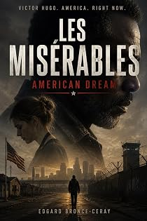

Victor Hugo's epic transposed to the American continent
by Edgard Bronce-Ceraypar Edgard Bronce-Ceray
The bookLe livre
Carthage, Ohio: the last factory closed in 2002 and the town began the slow business of dying. Reverend James Whitfield stayed because someone had to. Hugo's engine — the pursuit, the impossible mercy, the ledger of who owes what to whom — reassembled in a landscape he never imagined but that his novel already contained. Not an adaptation of the plot so much as a transplant of the moral machinery, into a country that runs it every day.
Carthage, Ohio : la dernière usine a fermé en 2002 et la ville a commencé à mourir lentement. Le révérend James Whitfield est resté parce qu'il fallait bien que quelqu'un reste. Le moteur de Hugo — la traque, la miséricorde impossible, le registre de ce que chacun doit à l'autre — remonté dans un paysage qu'il n'a jamais imaginé mais que son roman contenait déjà. Moins une adaptation de l'intrigue qu'une greffe de la mécanique morale, dans un pays qui la fait tourner tous les jours.
From the opening pagesLes premières pages
C H A P T E R 1
In 2002, the last factory in Carthage, Ohio closed, and the town began the slow business of dying. The pharmacy went first, then the hardware store, then the diner. The high school consolidated with the next county's. The gas station held on because people still needed to drive somewhere else.
Reverend James Whitfield had arrived in Carthage in 2000, when there was still a reason to arrive. By the time the factory closed, he was the only professional left who hadn't been offered a transfer and declined. He stayed because someone had to, and because he had nowhere else to be, and because — though he would never have said it — he suspected that God had a particular fondness for places no one else wanted.
He was sixty-two years old. He was Black. This mattered in Carthage the way weather mattered: it was always there, it shaped everything, and nobody talked about it unless it got severe. The congregation of the First Baptist Church on Elm Street was mostly white, because Carthage was mostly white, and Whitfield had been called to serve it after the previous pastor retired to Florida with suspicious haste. There had been a meeting about it. The meeting had been civil. Whitfield came anyway.
He lived in the parsonage next to the church, a clapboard house with a porch that sagged on the east side. He kept the front door unlocked. People told him this was foolish. He told them he'd rather lose a television than make a neighbor knock.
He had very little to steal. His salary, which the dwindling congregation paid irregularly, he gave away with a consistency that alarmed the church treasurer. When Ed Drucker lost his job at the factory and couldn't make his truck payment, Whitfield paid it. When the Solis family — one of three Mexican families in Carthage — couldn't cover their daughter's emergency room bill, Whitfield covered it and told them it came from a church fund that did not exist. When old Mrs. Lannigan needed her roof patched and her son in Columbus wouldn't return her calls, Whitfield went up there himself, at sixty-two, with bad knees, and did it poorly enough that it leaked again within the year, at which point he went up again.
The town didn't know what to make of him. The generous reading was that he was a saint. The less generous reading was that he was a fool who would run out of money before he ran out of people to give it to, and then he'd be a burden like everyone else. Both readings were probably correct.
He ate simply. He drove a 1996 Buick LeSabre with 180,000 miles on it. He read — theology, history, the Carthage Courier when it still printed, box scores. He had been married once. His wife had died of pancreatic cancer in 2006, in the space of four months between diagnosis and funeral. He did not talk about her, but he kept her reading glasses on the kitchen windowsill, and sometimes, when he washed the dishes, he looked at them the way a sailor looks at the coast.
He preached short sermons. His theology was unspectacular. He believed that God was real, that people were broken, and that the distance between the two could only be crossed in one direction. He did not believe in prosperity gospels, speaking in tongues, or the rapture. He did not believe that America was a chosen nation. He believed, with a quietness that was either faith or exhaustion, that every person who showed up at his door had been sent there, and that his only job was to open it.
This was the man whose door opened, on a Tuesday evening in October 2007, when a stranger knocked.
Or rather: the man whose door was already open when the stranger, who had expected to knock, found that he didn't need to.
* * *
C H A P T E R 2
John Valjean had been released from the Federal Correctional Institution at Elkton, Ohio, at 7:14 a.m. on a Tuesday in October, after serving ten years of a twelve-year sentence. He was given a bus ticket to Columbus, eighty-seven dollars in gate money, a manila envelope containing his personal effects — a wallet with no cards in it, a dead cell phone, a photograph of a woman he no longer knew — and a set of conditions for his supervised release that ran to nine pages of small print.
The conditions told him where he could live, where he could not live, whom he could see, whom he could not see, when he had to report, what he could not drink, what he could not smoke, what he could not access online, and how far he could travel without written permission. They did not tell him where to find a bed tonight.
He was thirty-eight years old. He had gone in at twenty-eight. The crime was theft: infant formula, diapers, and Children's Tylenol from a Walgreens in Dayton, during the winter of 1997, when he was unemployed and his sister's kids were sick and the shelves at the food bank were bare. The value of the stolen goods was $214.16. He had two prior convictions — a misdemeanor trespass at nineteen, a petty theft at twenty-three, both from the years when he was living in his car — and under Ohio's repeat offender statute, the judge had the discretion to enhance the sentence. The judge used his discretion. Ten years.
The bus dropped him in Columbus at noon. He had an address for a halfway house. The halfway house had no beds. The man at the desk told him to try the shelter on Fourth Street. The shelter on Fourth Street told him to come back at five. It was twelve-thirty.
He walked. Columbus was loud and fast and foreign. Ten years is long enough for a city to become another city. The buildings were the same but the people moved differently, looked at different things, held different objects in their hands. Everyone had a phone now — small, bright things they flipped open and shut and talked into while they walked, as if the person beside them were less real than the voice in the device. He had no phone. He had eighty-seven dollars and a manila envelope.
At a McDonald's on High Street, he bought a coffee and sat by the window. A help wanted sign stood in the window next to him. He went to the counter and asked. The manager, a woman younger than him by fifteen years, gave him an application on a clipboard. The application asked for his Social Security number, his employment history for the last ten years, and whether he had ever been convicted of a felony.
He checked the box. He never heard back.
This would become a pattern.
* * *
On the ninth day, he found a listing on Craigslist — the shelter had a computer — for a landscaping company in Westerville. The ad said: All backgrounds welcome. Second chances start here. He wrote down the number on the back of his bus ticket and called from the shelter's phone.
The excerpt ends here — about 1,214 words of the published edition.L'extrait s'arrête ici — environ 1,214 mots de l’édition parue.
KindlePaperbackBrochéContextContexte
The one programme that is not translation. A sustained project of transposition: the monuments of French literature carried, one by one, into the present — not modernised paraphrase but the moral machinery of a great book rebuilt in a landscape its author never saw.
Le seul programme qui ne relève pas de la traduction. Un travail suivi de transposition : les monuments de la littérature française transportés un à un dans le présent — non pas une paraphrase modernisée, mais la mécanique morale d'un grand livre remontée dans un paysage que son auteur n'a jamais vu.
The whole programmeTout le programme